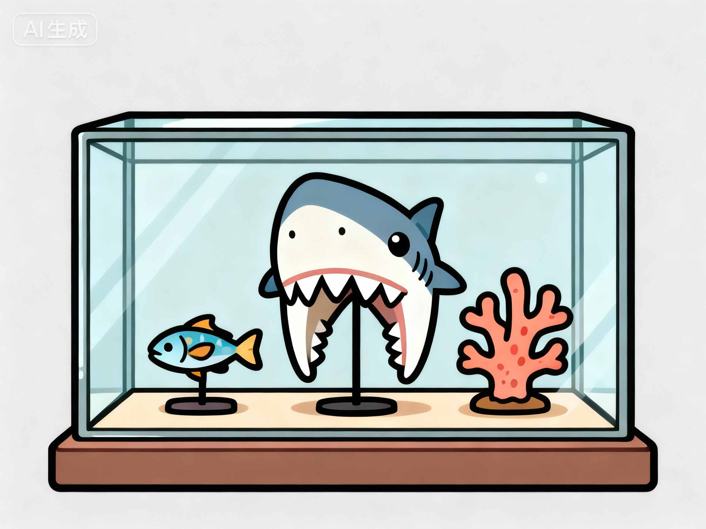

海洋生物标本馆
平潭蓝眼泪
钢琴曲-澳前小镇
平潭海洋科普馆位于平潭综合实验区海坛街道澳前村，是全国首家以台湾海峡海洋生物为主题，集标本收藏、活体培育、科普体验于一体的海洋文化交流中心。馆内珍藏数百种台湾海峡特色海洋生物标本，包含鱼类、贝类，“蓝眼泪”发光藻类等。本馆通过珍稀标本展示、与微生物对话、动态影像技术等，生动还原台湾海峡各类海洋生物的真实生态。
平潭滩涂、台湾海峡与台湾西海岸湿地共同构成两岸连通的生态系统，许多海洋生物自由迁徙其间，印证着两岸同根同源、血脉相连的天然羁绊。这里的每一件标本，每一粒活体微生物发光藻，不仅是自然的馈赠，更凝结着两岸渔业从业者和科研工作者的合作智慧，体现出两岸在海洋生态保护、产业发展和生物研究领域的深度融合发展。
我们期待以海洋为纽带，让每一位参观者深刻感受两岸人民共同守护祖产祖海的情谊与智慧，共同见证两岸融合发展的蓝色篇章！
Pingtan Marine Science Museum is located in Aoqian Village, Haitan Street, Pingtan Comprehensive Experimental Zone. It is the first marine cultural exchange center in China themed on marine life in the Taiwan Strait, integrating specimen collection, live organism cultivation and popular science experience. The museum houses hundreds of specimens of characteristic marine life from the Taiwan Strait, including fish, shellfish and "blue tears" bioluminescent algae. Through the display of rare specimens, interaction with microorganisms and dynamic imaging technology, the museum vividly restores the real ecology of various marine organisms in the Taiwan Strait.
The tidal flats of Pingtan, the Taiwan Strait and the wetlands on the western coast of Taiwan together form an interconnected ecosystem across the Taiwan Strait. Many marine organisms migrate freely within this system, confirming the natural bond that connects the two sides of the Strait as they share the same roots and blood ties. Every specimen and every particle of live bioluminescent algae here is not only a gift from nature, but also embodies the cooperative wisdom of fishermen and scientific researchers on both sides of the Strait. It reflects the in-depth integrated development of the two sides in the fields of marine ecological protection, industrial development and biological research.
We look forward to taking the ocean as a link, allowing every visitor to deeply feel the friendship and wisdom of people on both sides of the Strait in jointly protecting their ancestral heritage and seas, and to witness together the blue chapter of integrated development across the Taiwan Strait.